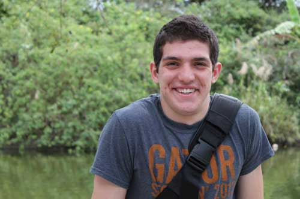

About Me
My name is Adam Gerstenfeld and I am a second-year Telecommunications student at the University of Florida, double-majoring in Telecommunications and International Studies. My dream is to be an international news correspondent in the Middle East.
However, not only has my school prepared me well in the professional field, it has also brought me to passions I never knew existed. At school I work as a Resident Assistant in the oldest Residence Hall on campus. I also have the pleasure of serving as UF’s first Interfaith Cabinet Director.
For me personally, the spectrum of experiences I have undergone at this University has made my writing become so much more alive. I first started as a journalist when I was a senior in high school. I was looking at different scholarships to apply to, and one caught my attention immediately: the Maxwell School of Citizenship Competition.
The task was to find a community problem and write a full report to a city commissioner detailing a solution. I was hooked immediately. From there, I decided to do some investigative work into flooding issues in a neighboring county, interviewing city engineers, FEMA representatives, even city commissioner Angelo Castillo!
I was lucky enough to be selected as a finalist. As this was my first venture into the world of investigative journalism, I was immediately inspired to follow this new pursuit in college - and I have never looked back.
Aside from reporting, my hobbies include rock climbing and yoga. I have also become extremely interested in professional photography, and you can view some of my pictures on my flickr account.